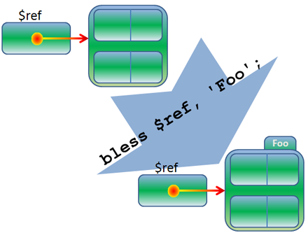

This is quite possibly the most important lesson on Perl you will ever take. It holds the key to unlocking
the vast treasure trove known as CPAN (the Comprehensive Perl Archive Network), containing tens of thousands
of modules of code that other people have written and published to make your life easier! Nearly all of
those modules are Object-Oriented (OO) and right here is where you'll learn how they work.
This course is not a complete primer on the general principles of object-oriented programming. We'll cover
the basics right now; our goal here is to teach you the specific terminology we're employing in this course.
If you don't have an OO programming
background, the upcoming explanations should be sufficient to
get you through the rest of this course, but you may want to consider additional education
on the principles of object-oriented analysis and design; you'll be glad you did. OST offers a couple of options for that:
Introduction to Object-Oriented Programming and
Head-First Object-Oriented Analysis and Design.
Object-Oriented Programming Principles
Early in my career I worked with large FORTRAN programs for space and astronomy applications.
They had to deal with huge amounts of data; I'd see code full of subroutine calls with dozens of
parameters being passed (and when that wasn't enough, they used COMMON blocks, but enough about
FORTRAN's shortcomings).
Objects solve the problem of passing data around in increasingly larger parameter lists to subroutines.
Instead, each object contains all the data associated with it, and when you perform an action on the
object, it knows where to find that data, allowing subroutine calls (in OO terms, now method calls)
to be much shorter.
Before we get going on examples, here are some important OO programming terms and principles:
- A class is like a blueprint or template describing a certain object, which is a model of
something in the problem we are solving.
- A class provides a constructor for creating new objects.
- Each object will be referred to as an instance of the class.
- The class is (mostly) abstract; instances are concrete.
- There can (usually) be an arbitrary number of instances created from a class, all of them different.
(There are rare exceptions called Singleton classes.)
- Each instance has attributes and behavior.
- You can access and modify the attributes, and trigger the behavior, of any instance independently of
all other instances.
- The rules for accessing the attributes, and the code for performing the behavior, are stored in the
class.
- The instance-specific behavior is triggered through instance methods.
- The class may define additional class methods that (usually) act on additional
class attributes that are defined for the class as a whole and stored within the class.
Object-oriented
techniques range so far and wide and there are exceptions to just about everything I've said, but
the above information is the most common and practical definition of object-oriented programming.
Here's an example of how these concepts might be applied. It's not like our usual examples where we write code,
it's a description of
a particular object class. Before you create an object class in any language, you need to be able
to work with it in the universal abstract terms used in object-oriented analysis and design. Take a look:
- Let's say we have a class describing bank accounts named BankAccount.
- The class provides the means to create a new bank account. (The constructor here is like a bank branch
manager.)
- All bank accounts share a common structure (they all have an account number, balance, owner, and various other elements.), but
each bank account is different from all other bank accounts (they have different account numbers, balances,
and owners).
- Doing anything to any one particular bank account does not affect the others.
- There are instance methods for bank accounts: credit, debit, and so on.
- The BankAccount class defines class attributes such as the address of the bank branch, the number of the
next account to be created, and so on.
- The BankAccount class defines class methods that operate on those class attributes, for instance, to
increment the number of the next account to be created.
- The BankAccount class defines class methods that operate on other data, such as the aggregate of all
bank accounts that have been created, for instance, to sum the balances in all accounts to determine the
amount the bank has on deposit (this is a hypothetical mom-and-pop bank that does not indulge in the kind
of fractional reserve leveraging that places so many modern banks in financial jeopardy). Therefore it has
to keep a note of every bank account that gets created by putting some kind of hook in the constructor that
adds a reference to the new account to a list stored in the class.
| Note | In the course of your career as a programmer, you might get into the world of bookkeeping,
where there are very strict rules for posting dollar amounts to particular ledger accounts. In that world,
a bank account is considered an Asset account, which is typically maintained with a Debit balance, which
means that when you post a deposit (an increase) to the account, it is posted as a Debit.
In this course, we will treat a bank account as a simpler, user-based element, where we will consider an
increase to the account as a "credit." |
We're going to focus on bank accounts as our example during the next two lessons, but
objects can represent anything to which you can ascribe attributes and behavior. Usually they
represent concrete things such as readouts on an aircraft control display, or a page on the internet.
But they can also represent more abstract things that you may need to use in an application, such as
a metaclass that allows other classes to implement roles or traits.
Starting To Use Objects
Let's go over how to use an object. We'll get around to using one in the second part
of this lesson. Learning how to create them will be easier when you've learned how they're used.
In order to use an object, we need the class that describes it.
Copy the file BankAccount.pm from the /software/Perl4 folder into your perl4 folder,
but don't look in it yet!
INTERACTIVE TERMINAL SESSION: Type this into the terminal
cold:~/$ cd perl4
cold:~/perl4$ cp /software/Perl4/BankAccount.pm .
This file implements a bank account class like the one I used as the example above, but it doesn't have all
of that functionality, at least, not yet. Now create usebank.pl in your /perl4 folder as
shown:
CODE TO ENTER:
#!/usr/local/bin/perl
use strict;
use warnings;
use BankAccount;
my $personal_account = BankAccount->new( owner => 'me',
account_number => 12345,
balance => 1000 );
$personal_account->credit( 500 );
print 'New balance = $', $personal_account->balance, "\n";
 and run that program. You'll see this:
and run that program. You'll see this:
INTERACTIVE TERMINAL SESSION: Expected output
cold:~/perl4$ ./usebank.pl
New balance = $1500
Take a second to digest what's going on here: we created a bank account with an opening balance of
$1000. Then we credited $500 to the account. Finally, we printed out the balance and got $1500. Now let's
look at the new syntax:
OBSERVE: usebank.pl
.
.
.
my $personal_account = BankAccount->new( owner => 'me',
account_number => 12345,
balance => 1000 );
$personal_account->credit( 500 );
print 'New balance = $', $personal_account->balance, "\n";
.
.
.
We have called a constructor: BankAccount->new and passed it a list of
arguments to be interpreted as a list of attribute names and their initial values. (Hey, it
looks a lot like a hash initialization. We'll come back to that later.)
The new method returned an instance of the BankAccount class, which we stored
in $personal_account. We then called the credit method on it and
passed 500 as the amount to be credited. Finally, we called the balance
method on it and this returned the current balance, which we printed.
We'll get to this exciting new use of the arrow operator in a moment, but first, let's address this burning
question: How do we know what methods and attributes we can use? The answer is found in the documentation.
I will rarely write documentation for the code in this course, but I'll make an exception here, to
illustrate that you can't determine what you're supposed to do with an object class someone else
wrote without reading the documentation. (Reading the source code will tell you what you can do, but
that's not the same thing! Of course, the next version of the code might change that, but we'll work with what we've got now.)
The documentation is the
author's contract with you.
So, let's look at the BankAccount module's documentation. We'll just use perldoc on the file itself:
INTERACTIVE TERMINAL SESSION: perldoc output
cold:~/perl4$ perldoc BankAccount.pm
NAME
BankAccount - class implementing a bank account
SYNOPSIS
use BankAccount;
my $account = BankAccount->new( <attributes> );
ATTRIBUTES
balance
The initial balance.
account_number
The account number.
owner
The name of the account owner.
METHODS
Any of the attributes may be accessed via a method of the same name,
and set by passing an argument to that method. The following methods
are also defined:
$account->credit( <amount> )
Add amount to the balance.
$account->debit( <amount> )
Subtract amount from the balance.
Method Calls: The Arrow Operator
I shot an arrow into the air,
It fell to earth, I knew not where;
For, so swiftly it flew, the sight
Could not follow it in its flight.
-Henry Wadsworth Longfellow
You've already used the arrow operator (->) for accessing aggregate members via references, or
calling coderefs. Now we'll use it for something new! Remember, we decide what the arrow operator does by
looking at what's on its right side. If that's a bareword, then it's a method name, and may or may not be
followed by parentheses containing zero or more arguments to pass to the method. It will return a list of
zero or more values, just like any subroutine (more on this later).
The method may be either a class method or an instance method, depending on what's on the left
side: if there's a class there (a bareword), it's a class method. If there's an object there (something you
got from a constructor—and no, I haven't told you what kind of thing that is, yet), then it's an
instance method.
The new method was a class method (yes, it's a constructor; a constructor is a
particular kind of class method). The credit method was an instance method. But what
about balance? That's an instance method too! In Perl (unlike most other object-oriented
languages), there's nothing special about attributes. You access attributes through instance methods. So
strictly speaking, you can't actually tell that you're accessing an attribute; as far as you're concerned,
you're calling an instance method that has some behavior documented as returning and/or modifying some
internal state, but whether it does anything else behind the scenes (like send an email to the FBI if you
execute an unusually large credit), is impossible to determine without looking at the source code.
To make sure you get comfortable using this object, let's make a few changes to usebank.pl:
CODE TO EDIT:
#!/usr/local/bin/perl
use strict;
use warnings;
use BankAccount;
my $personal_account = BankAccount->new( owner => 'me',
account_number => 12345,
balance => 1000 );
$personal_account->credit( 500 );
$personal_account->owner( 'Biff' );
print 'New balance = $', $personal_account->balance, "\n";
$personal_account->debit( 100 );
print 'Balance on ', $personal_account->owner, "'s account = \$", $personal_account->balance, "\n";
and run it, and you'll see this:
INTERACTIVE TERMINAL SESSION: Expected output
cold:~/perl4$ ./usebank.pl
Balance on Biff's account = $900
Our class has very little attribute validation—make that no attribute validation. It doesn't check
to make sure that an account_number attribute is passed to new or what heinous consequences that
omission might have later on. In fact, you can pass attributes with any names you want and it won't mind.
A well-written class might validate these attributes to make sure that they match what the documentation
says is permitted.
The goal of a module author is to provide a black box: code that you don't have to inspect in order
to use. But we're going to learn how to write modules now, so it's time to peek under the hood of
BankAccount.pm.
You already know that the use BankAccount statement caused Perl to load BankAccount.pm, which made
its subroutines available to our program.
OBSERVE: BankAccount.pm
package BankAccount;
use strict;
use warnings;
sub new
{
my ($class, %attr) = @_;
my $ref = \%attr;
bless $ref, $class;
return $ref;
}
.
.
.
The package statement caused the new subroutine to be in the
BankAccount package.
I like to say that when it comes to the implementation of object-oriented programming in Perl, there is
less going on than meets the eye. Where other languages have special keywords, data types, and syntax for
objects, Perl has very little of that, and implements objects by using a lot of things you already know about
and only a few extra pieces of "magic" to glue them together. Here's the first piece of that magic:
| Note | A class in Perl is just a package. |
The class method call BankAccount->new simply causes Perl to call the new
subroutine in the package BankAccount; that is, BankAccount::new, with one
important addition: Perl passes an extra first argument to every method call, equivalent to what was on the left side
of the arrow.
What's on the left side of that arrow in our example? The bareword BankAccount. So the string BankAccount
gets passed as a first argument to BankAccount::new. That's the class name, so we called it
$class in the definition of new. Add a line to BankAccount.pm so you can see
the arguments:
CODE TO EDIT:
.
.
.
sub new
{
my ($class, %attr) = @_;
print "Arguments: @_\n";
my $ref = \%attr;
bless $ref, $class;
return $ref;
}
.
.
. it and run usebank.pl:
INTERACTIVE TERMINAL SESSION: Expected output
cold:~/perl4$ ./usebank.pl
Arguments: BankAccount owner me balance 1000
Balance on Biff's account = $900
Remove the line you added before you continue. The rest of the arguments that were passed to
new were put into a hash named %attr that we referenced in $ref. This is
going to be our object. In Perl, there is no fixed representation of an object; it just has to be a reference
to something (we'll see why in a moment), but it can be a reference to anything. However, they most commonly
reference a hash, because that's really convenient for storing the object's data.
Every entry in the hash is one of the object's attributes; the name and value are right there.
Before we go over the rest of new, let's see how we would add another attribute.
Modify usebank.pl as shown:
CODE TO EDIT:
#!/usr/local/bin/perl
use strict;
use warnings;
use BankAccount;
my $personal_account = BankAccount->new( owner => 'me',
balance => 1000,
overdraft_limit => 500 );
$personal_account->owner( 'Biff' );
print "Overdraft limit = \$", $personal_account->overdraft_limit, "\n";
$personal_account->debit( 100 );
print 'Balance on ', $personal_account->owner, "'s account = \$", $personal_account->balance, "\n";
and run that program, and you will see:
INTERACTIVE TERMINAL SESSION: Expected output
cold:~/perl4$ ./usebank.pl
Can't locate object method "overdraft_limit" via package "BankAccount" at ./usebank.pl line 11.
The BankAccount module doesn't have a method to get at the overdraft limit. Let's add one now. Make the
following modification to BankAccount.pm:
CODE TO EDIT:
.
.
.
sub owner
{
my $self = shift;
$self->{owner} = shift if @_;
return $self->{owner};
}
sub overdraft_limit
{
my $self = shift;
$self->{overdraft_limit} = shift if @_;
return $self->{overdraft_limit};
}
sub account_number
{
my $self = shift;
$self->{account_number} = shift if @_;
return $self->{account_number};
}
.
.
.
that file and re-run usebank.pl and you will see:
INTERACTIVE TERMINAL SESSION: Expected output
cold:~/perl4$ ./usebank.pl
Overdraft limit = $500
Balance on Biff's account = $900
What just happened? You saw from the earlier error message that Perl could not find an
overdraft_limit method in the BankAccount package; after we created
BankAccount::overdraft_limit, it found and used it. That method call was made with
$personal_account->overdraft_limit. So how did Perl know to look in the BankAccount package for
the overdraft_limit subroutine?
The answer lies in the rest of the new routine:
OBSERVE: new()
sub new
{
my ($class, %attr) = @_;
my $ref = \%attr;
bless $ref, $class;
return $ref;
}
Before we returned the hash reference $ref, we called bless on the reference
and passed the name of the $class to it. That's the next bit of magic:
| Note | Instance method calls are made on references that have been blessed into a
package, so that Perl knows which package contains the method definition. |
bless takes the second argument and puts it in a special place in the data pointed to
by its first argument:

When the arrow operator sees a bareword on its right side and a reference on its left side, it follows the
reference to look in that specific place for the package. If the reference wasn't blessed, it can't find one,
as you'll see when you try this one-liner:
INTERACTIVE TERMINAL SESSION: One-liner
cold:~/perl4$ perl -le '$ref = {}; $ref->whatever'
Can't call method "whatever" on unblessed reference at -e line 1.Looking at new again, here's the explanation of the whole subroutine:
- Shift the phantom argument (the class name) into $class.
- Copy the remaining arguments into a hash (%attr).
- Create a reference to %attr and bless it.
- Return $ref as the result of new.
So our object $personal_account is just a hash reference. But it's special in that
it has been blessed so that the hash it points to "knows" about the package into which
it was blessed.
For instance method calls, the same rule for the "phantom argument" applies: Perl passes the thing on the
left side of the arrow as that first argument. In the case of an instance method, that is the object itself,
which is the hash reference. So let's see how an accessor method (what we call a method written for
accessing an attribute) like overdraft_limit() works:
OBSERVE: Accessor method
sub overdraft_limit
{
my $self = shift;
$self->{overdraft_limit} = shift if @_;
return $self->{overdraft_limit};
}
Remember: There's less going on than meets the eye. The phantom argument is shifted from
@_ into $self. We could have called it anything, but the most common
name is $self. (This is different from most other object-oriented languages where the
name of the invocant is fixed.) The object is a hash reference, so the next line replaces the value of
overdraft_limit in it if an argument is passed to the method to overwrite it; this lets us
write $personal_account->overdraft_limit( 1000 ) to change the value after initialization. That object
behavior is entirely at the whim of the writer of the object class; if we'd wanted to, we could simply
prohibit changing the value after initialization by not having that line in
overdraft_limit(). Then, the routine would return the corresponding value in the hash
reference.
| Note | You may have noticed that nothing stops the writer of usebank.pl from accessing attributes
directly by treating $personal_account as the hash reference that it is:
$personal_account->{overdraft_limit} = 1000, for instance. Don't do that! That is called
violating encapsulation and can cause many problems, because you're bypassing the interface the
module writer set up for doing things to the object. That interface should be complete, so when you write a
module, be sure and provide ways for your users to do everything that they shoul be able to
do to an object's attributes, that way they're not tempted to violate encapsulation. |
Extending the Module
If you're new to object-oriented programming or just new to object-oriented programming in Perl,
you're probably pretty excited about what you've just learned, and all of the new possibilities. That's excellent! Now we're going to expand on that foundation.
Let's modify BankAccount.pm even more to explore some of those possibilitie. Modify your code as shown:
CODE TO EDIT:
package BankAccount;
use strict;
use warnings;
sub new
{
my ($class, %attr) = @_;
my $ref = \%attr;
bless $ref, $class;
return $ref;
}
sub balance
{
my $self = shift;
$self->{balance} = shift if @_;
return $self->{balance};
}
sub owner
{
my $self = shift;
$self->{owner} = shift if @_;
return $self->{owner};
if ( @_ )
{
$self->{owner} = @_ > 1 ? [ @_ ] : shift;
}
my $current = $self->{owner} or return;
return ref $current ? @$current : $current;
}
sub overdraft_limit
{
my $self = shift;
$self->{overdraft_limit} = shift if @_;
if ( @_ )
{
my $new_limit = shift;
warn "Can't have negative overdraft limit!\n" and return if $new_limit < 0;
$self->{overdraft_limit} = $new_limit;
}
return $self->{overdraft_limit};
}
sub account_number
{
my $self = shift;
$self->{account_number} = shift if @_;
return $self->{account_number};
}
sub debit
{
my ($self, $amount) = @_;
$self->balance( $self->balance - $amount );
}
sub credit
{
my ($self, $amount) = @_;
$self->balance( $self->balance + $amount );
}
1;
it, and then modify usebank.pl as shown:
CODE TO EDIT:
#!/usr/local/bin/perl
use strict;
use warnings;
use BankAccount;
my $personal_account = BankAccount->new( owner => 'me',
balance => 1000,
overdraft_limit => 500 );
$personal_account->owner( 'Biff''Marty', 'Lorraine' );
print "Overdraft limit = \$", $personal_account->overdraft_limit, "\n";
$personal_account->overdraft_limit( -1 );
$personal_account->debit( 100 );
print 'Balance on ', $personal_account->owner, "'s account = \$", $personal_account->balance, "\n";
and run it and you will see:
INTERACTIVE TERMINAL SESSION: Expected output
cold:~/perl4$ ./usebank.pl
Can't have negative overdraft limit!
Balance on MartyLorraine's account = $900
Here we've made up some rules for argument passing and validation. The change to the overdraft_limit()
method gives us a warning if we try to set a negative limit. Alternatively, we could have chosen to
die instead (and that might be a better choice in a production program). The change to
the owner() method allows joint accounts; if there's more than one owner passed to the method for storing,
they're stored as an array, and upon retrieving from the method, expanded into the list again. This is why
the last line prints MartyLorraine: it's in a list context, so it's printing the list
(Marty, Lorrraine). The interface to the method has changed; users of the module
should be made aware of this through documentation, so they know that the
method may return multiple values in the case of joint ownership.
Object-oriented purists (and there are many of them) might not whole-heartedly embrace
the design of the class and methods that I've shown you here, but my purpose is to show you
how to implement a class, not how to design an interface; that's a matter for a class on
object-oriented analysis and design. The approach we've taken isn't a bad one and it's a good teaching tool.
Improving the Implementation
Let's look at another enhancement to the module. Suppose we need to remember all of the transactions that
have been made on an account. Modify BankAccount.pm as shown:
CODE TO EDIT:
.
.
.
sub account_number
{
my $self = shift;
$self->{account_number} = shift if @_;
return $self->{account_number};
}
sub transact
{
my ($self, $type, $amount) = @_;
my %transaction = ( date => time, type => $type, amount => $amount );
push @{ $self->{transactions} }, \%transaction;
$self->{balance} += $amount;
}
sub debit
{
my ($self, $amount) = @_;
$self->balance( $self->balance - $amount );
$self->transact( debit => -$amount );
}
sub credit
{
my ($self, $amount) = @_;
$self->balance( $self->balance + $amount );
$self->transact( credit => $amount );
}
1;
.
.
.
it and edit usebank.pl:
CODE TO EDIT:
#!/usr/local/bin/perl
use strict;
use warnings;
use BankAccount;
my $personal_account = BankAccount->new( owner => 'me',
balance => 1000,
overdraft_limit => 500 );
$personal_account->owner( 'Marty', 'Lorraine' );
$personal_account->overdraft_limit( -1 );
$personal_account->credit( 300 );
$personal_account->debit( 100 );
print 'Balance on ', $personal_account->owner, "'s account = \$", $personal_account->balance, "\n";
and run it, and you'll see this:
INTERACTIVE TERMINAL SESSION: Expected output
cold:~/perl4$ ./usebank.pl
Balance on me's account = $1200
Ignoring that glaring grammatical issue for now, see how we have the credit() and debit() methods each call the
new transact() method? That avoids duplicating the code that maintains the transactions data in the
object. And notice how we can store data in the object that isn't an attribute we gave the user direct access
to? You can think of this as private data. (And no, we haven't put in any code yet that reads the
data we've put into the transactions slot; you'll get to do that in the homework!)
Now consider how this approach pays off if we need to implement a way of transferring money between
accounts:
OBSERVE: Transfer Method
# Call as $account->transfer( $amount, $target_account )
sub transfer
{
my ($self, $amount, $target_account) = @_;
$self->debit( $amount );
$target_account->credit( $amount );
}
But this would appear in the transaction record for each account as a simple credit or
debit. We'd like more specific information than that. Make this change in BankAccount.pm:
CODE TO EDIT:
package BankAccount;
use strict;
use warnings;
{
my $NEXT_ACCTNO = 10001;
sub next_acctno
{
return $NEXT_ACCTNO++;
}
}
sub new
{
my ($class, %attr) = @_;
$attr{account_number} = $class->next_acctno;
my $ref = \%attr;
bless $ref, $class;
return $ref;
}
sub balance
{
my $self = shift;
$self->{balance} = shift if @_;
return $self->{balance};
}
sub owner
{
my $self = shift;
if ( @_ )
{
$self->{owner} = @_ > 1 ? [ @_ ] : shift;
}
my $current = $self->{owner} or return;
return ref $current ? @$current : $current;
}
sub overdraft_limit
{
my $self = shift;
if ( @_ )
{
my $new_limit = shift;
warn "Can't have negative overdraft limit!\n" and return if $new_limit < 0;
$self->{overdraft_limit} = $new_limit;
}
return $self->{overdraft_limit};
}
sub account_number
{
my $self = shift;
$self->{account_number} = shift if @_;
return $self->{account_number};
}
sub transact
{
my ($self, $type, $amount) = @_;
my %transaction = ( date => time, type => $type, amount => $amount );
push @{ $self->{transactions} }, \%transaction;
$self->{balance} += $amount;
}
sub debit
{
my ($self, $amount) = @_;
$self->transact( debit => -$amount );
}
sub credit
{
my ($self, $amount) = @_;
$self->transact( credit => $amount );
}
sub transfer
{
my ($self, $amount, $target_account) = @_;
my $message = "Transfer to " . $target_account->account_number;
$self->transact( $message, -$amount );
$message = "Transfer from " . $self->account_number;
$target_account->transact( $message, $amount );
}
1;
.
.
.
it and edit usebank.pl:
CODE TO EDIT:
#!/usr/local/bin/perl
use strict;
use warnings;
use BankAccount;
my $personal_account = BankAccount->new( owner => 'me',
balance => 1000,
overdraft_limit => 500 );
$personal_account->credit( 300 );
$personal_account->debit( 100 );
print 'Balance on ', $personal_account->owner, "'s account = \$", $personal_account->balance, "\n";
my $slush_fund = BankAccount->new( owner => 'you',
balance => 10000 );
$slush_fund->transfer( 5000, $personal_account );
print "New balance on my account = \$", $personal_account->balance, "\n";
and run it and you will see:
INTERACTIVE TERMINAL SESSION: Expected Output
cold:~/perl4$ ./usebank.pl
New balance on my account = $6200
Do you see how the description of the transaction is properly captured and passed to the transact()
method? We've also introduced a class method, next_acctno(), used by new(), to operate
on class data to generate a new account number every time it's called.
| Note | To be completely accurate, a method call is not restricted to being a bareword on the right side of
the arrow; it can also be a scalar containing a string which will be interpreted as the method name.
Similarly, a class method call is not restricted to being a bareword on the left side of the arrow; it can
also be a scalar containing a string which will be interpreted as the class name. |
Once you finish the lesson, go back to the syllabus to complete the homework.